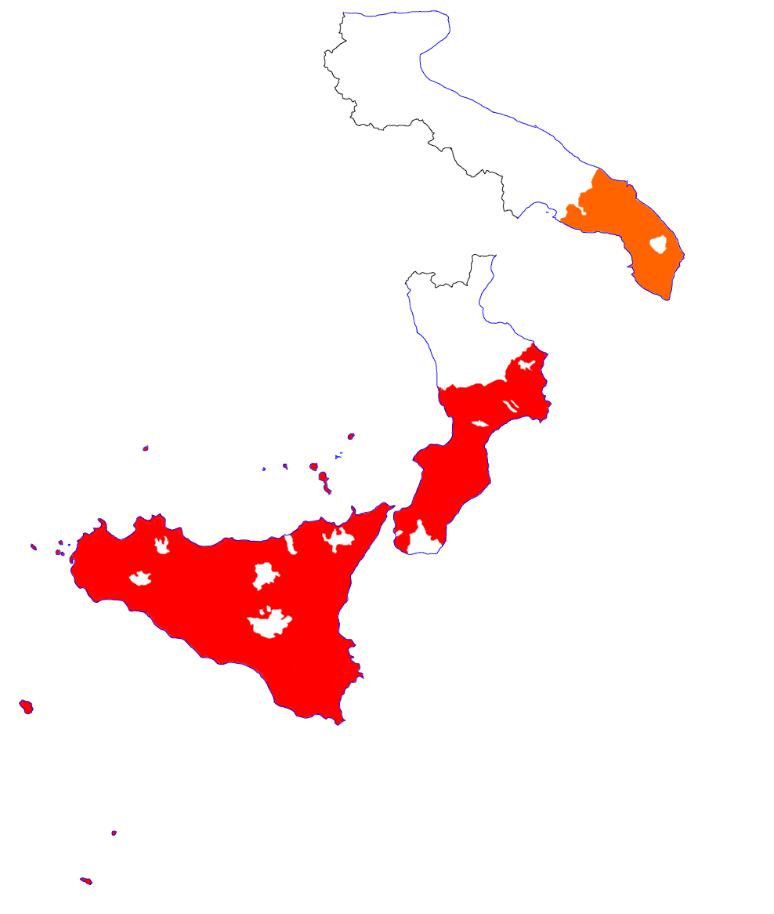

Siciliano
I dialetti siciliani sono il gruppo più meridionale dei dialetti italoromanzi e sono parlati in Sicilia e nelle sue isole minori, nonché in parte della Calabria e in Salento. Risentono di massicci influssi di varie lingue, particolarmente il greco, le lingue galloromanze e (principalmente nel lessico, e per quanto riguarda i dialetti isolani) l’arabo.